Zum Schutz gegen Absturz werden nachfolgend technische, persönliche und Kombinationen aus technischen und persönlichen Schutzmaßnahmen vorgestellt. Der Unternehmer hat die Schutzmaßnahmen unter Berücksichtigung der Rangfolge gemäß Abschnitt 3.2 auszuwählen.
Technische Einrichtungen zum Schutz gegen Absturz an Freileitungen können sein:
Die Versicherten haben vorhandene technische Einrichtungen zum Schutz gegen Absturz zu benutzen.
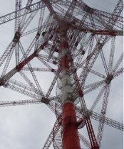
Abb. 1
Freileitungsmast mit Aufzugschacht, Bühnen und Treppen an der Elbekreuzung
Alternativ zu den Maßnahmen nach Abschnitt 4.1 können auch temporäre technische Einrichtungen zum Schutz gegen Absturz eingesetzt werden, beispielsweise:
Hubarbeitsbühnen kommen in der Praxis bei verkehrsgünstiger Lage der Maste, beispielsweise bei kurzzeitigen Tätigkeiten oder bei vereisten Masten zum Einsatz. Ihr Einsatz setzt die Möglichkeit eines ordnungsgemäßen Aufbaus, insbesondere geeigneter Stellflächen voraus.
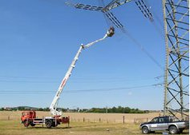
Abb. 2
Einsatz einer Hubarbeitsbühne für Arbeiten an einem Leiterseil unterhalb einer Abspannkette
Gerüste werden an Masten beispielsweise im Rahmen von umfangreichen Arbeiten an Kabelaufführungen eingesetzt. Es werden ausschließlich freigegebene und gekennzeichnete Gerüste benutzt.
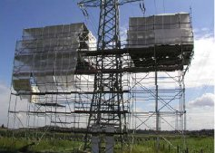
Abb. 3
Einsatz eines Gerüstes zur Montage von Kabelendverschlüssen an einem Freileitungsmast
Personenaufnahmemittel werden bei umfangreichen Korrosionsschutzarbeiten an großen Masten eingesetzt. Die statischen Voraussetzungen des Mastes müssen einen sicheren Einsatz der Personenaufnahmemittel gewährleisten.
Sind technische Einrichtungen nach Abschnitt 4.1 nicht vorhanden und der Einsatz temporärer technischer Einrichtungen nach Abschnitt 4.2 aus betriebstechnischen Gründen nicht sinnvoll, haben sich Kombinationen aus technischen Einrichtungen in Verbindung mit PSAgA bewährt.
Kombinationen technischer Einrichtungen in Verbindung mit PSAgA bestehen beispielsweise aus:
Steigschutzeinrichtungen mit fester Führung sind fest am Mast montierte Einrichtungen.
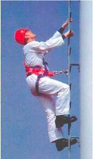
Abb. 4
Beispiel für eine Steigleiter mit Führungsschiene als Steigschutzeinrichtung
Der Schutz gegen Absturz wird durch die Verwendung eines Auffanggurtes, der über ein mitlaufendes Auffanggerät mit der Steigschutzeinrichtung verbunden ist, gewährleistet.
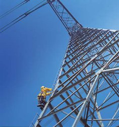
Abb. 5
Beispiel für einen Steigbolzengang mit gespanntem Stahlseil als Steigschutzeinrichtung. Das Stahlseil gilt als feste Führung
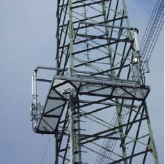
Abb. 6
Beispiel für die Ausrüstung eines Freileitungsmastes mit Wartungsbühnen und festen Führungen zum kollektiven Schutz gegen Absturz. Die Ausrüstung dient insbesondere der Wartung funktechnischer Einrichtungen.
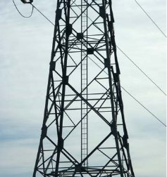
Abb. 7
Beispiel für einen Zugangsweg im Mastschaft durch eine zweiholmige Steigleiter. Die Steigleiter ist mit einem gespannten Stahlseil als fester Führung ausgerüstet.
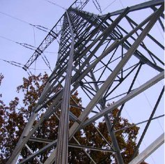
Abb. 8
Beispiel für ein Aufstiegssystem, das mit zugehörigen Steigschuhen oder Steighilfen benutzt wird. Die Schiene dient gleichzeitig als Steigschutzeinrichtung und kann alternativ auch mit einer elektromotorisch betriebenen Befahreinrichtung benutzt werden.
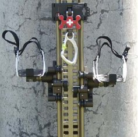
Abb. 9
Detailansicht der Steigschiene mit Steigschuhen
Steigbolzen mit Sicherheitseinrichtung sind an Masten fest installierte Anschlagpunkte, die in Verbindung mit PSAgA ein gesichertes Besteigen von Masten ermöglichen. Der Schutz gegen Absturz wird durch die Verwendung eines Sicherungsseils, das vom Mastfuß über eine Seilbremse durch die Sicherheitseinrichtung des Steigbolzens zum Auffanggurt des Monteurs geführt wird, gewährleistet. Die mögliche Absturzhöhe hängt unmittelbar vom Abstand zwischen zwei Steigbolzen mit Sicherheitseinrichtung ab und beträgt mindestens das Doppelte des Abstandes dieser Bolzen.
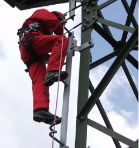
Abb. 10
Beispiel für den Einsatz von Steigbolzen mit Sicherheitseinrichtung am Eckstiel eines Gittermastes.
Ist der Einsatz von Schutzmaßnahmen nach Abs. 4.1 bis 4.3 nicht möglich oder aus betriebstechnischen Gründen nicht sinnvoll, ist das Besteigen von und Arbeiten auf Freileitungen unter Anwendung von PSAgA durchzuführen. Der Unternehmer wählt die PSA entsprechend dem Ergebnis seiner Gefährdungsbeurteilung aus.
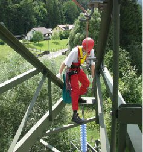
Abb. 11
Beispiel für den Einsatz von Steigbolzen mit Sicherheitseinrichtung in einer Traverse.
Die Versicherten haben die PSAgA beim Begehen von Zugangswegen und beim Arbeiten auf Freileitungen zu benutzen.
Die PSAgA wird so eingesetzt, dass auch bei einem Wechsel der Anschlagpunkte ein ununterbrochener Schutz gegen Absturz besteht.
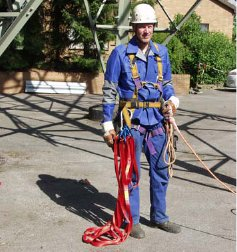
Abb. 12
Versicherter mit angelegter PSAgA vor dem Besteigen eines Freileitungsmastes mit der Schlaufenmethode
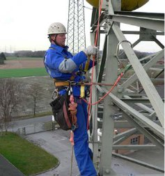
Abb. 13
Nach gesichertem Aufstieg am Mastschaft durch die Verwendung eines mitlaufenden Auffanggerätes an beweglicher Führung steigt der Versicherte auf eine Traverse um. Vor dem Lösen des Auffanggerätes hat sich der Versicherte mittels Verbindungsmittel an der Traversenkonstruktion gesichert. Der Einsatz des Halteseils stellt keine Maßnahme zum Schutz gegen Absturz dar und dient lediglich der Positionierung des Versicherten am Arbeitsplatz.